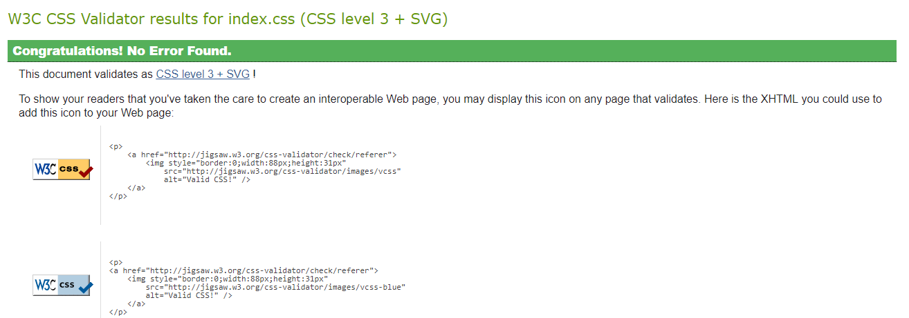

INTRODUCTION
In this CSY 1018 Web Development (first term), different properties of HTML and CSS have been taught including the useage of Github. Moreover, different properties like mobile responsive and different web browser supporter have been taught in the module of very first semester. In the first term, the assestment for the web development is to make the webpages that are responsive to all the devices as most of the users are mobiles over desktops.
In the first terminal assestment, students are asked to design a CV of their own representing the ideas and properties that are taught in the class in which the project must have to cover six pages of total including the modules good practice page.
Index : The landing page of the website.
About : The page that contains personal information.
C.V : The page that includes the personal information, experiences and skills
Social : The page that includes Social Media links.
Modules of good practice : Report Page
Contact : The page that includes google maps and contact form.
Index Page
The index page has a image background that is taken from (https://www.google.com.np/search?q=background+images+for+website&source=lnms&tbm=isch&sa=X&ved=0ahUKEwjM-vfZncjaAhXIsY8KHarVDb0Q_AUICigB&biw=1366&bih=637#imgrc=_8YwXMPLtKu5-M:).
The design is not all same but the idea was generated from (https://www.wix.com/website-template/view/html/1676/?siteId=a2b2ea31-fa89-4af6-839a-0152c05a239e&metaSiteId=25696c7e-f948-43cc-a307-463d74bcc52d&originUrl=https%3A%2F%2Fwww.wix.com%2Fwebsite%2Ftemplates%2Fhtml%2Fportfolio-cv).
The social media icons are free source and taken from (https://fontawesome.com/?from=io) \
Influencial Website for Interface Design
https://www.wix.com/
Evidence of w3 HTML validation
Evidence of w3 CSS validation
About page
The about page has simple layout explaing something about myself. In the header part of this page there is navigation bar, in the section part there is description about me and in the footer part there is the link for my social sites.
Evidence for w3 HTML validation
\
Evidence of w3 CSS validation
CV page
This page has all the details about me. This page contains the description about me and also the date of birth, education, skills, address, contact number, careers and trainings. Also in the header part, there is navigation bar and in the footer part there is the link for my social media that is facebook, twitter, instagram, youtube. the footer part contains the social links to my sites. And also includes the copyright sign.
Evidence for w3 HTML validation
\
Evidence of w3 CSS validation
Social page
This page contains only the social site links.
Evidence for w3 HTML validation
Evidence of w3 CSS validation
Contact page
This page contains the navigation bar in the header part, and the section part contains the maps and contact form aside. The map is embeded from the google maps. The footer part contains copyright sign.
Evidence for w3 HTML validation

Evidence of w3 CSS validation
Conclusion
The assignments requires the six pages inclusive of index, about, cv, social, contact and models of good practice. All these pages are validated in the nu html checker, w3c CSS validation service and accessibility validation which have been shown in the screenshot format in this page. All the designs are made using HTML and CSS properties. As the layout is made by looking at different websites and CV templates and portfolio (https://www.wix.com/)
Before making the website layouts differnt CV templates and portfolio has been analyzed and intent to make the good pattern.
The website are made using HTML and CSS in the sublime text software which is one of the convenient software for coding. The index(home) page is the landing page which we go in the first phase where other pages have been added with respect to the index page. Whenever, the home is pressed in the navigation bar then it directly takes to the landing page. Similarly, the page will move forward whenever clicks with the respective subject.
According to the first terminal rules and requirements all the layouts are mobile responsive as most of the users are mobile over desktop. All the layouts must meet the requirements of the assignments and also follow all the CSS3 properties.
References
W3schools.com. (2018). CSS Navigation Bar. [online] Available at:
https://www.w3schools.com/css/css_navbar.asp
[Accessed 22 Apr. 2018].
Fontawesome.com. (2018). Font Awesome 5. [online] Available at: https://fontawesome.com/?from=io
[Accessed 20 Apr. 2018].